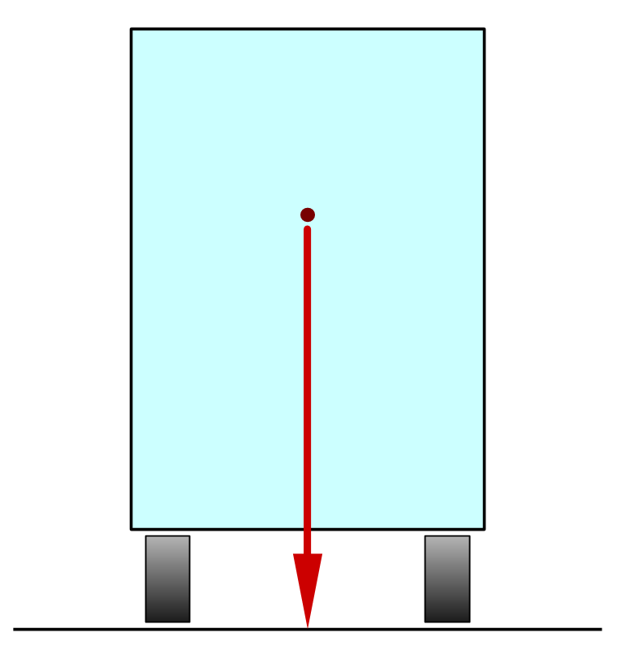
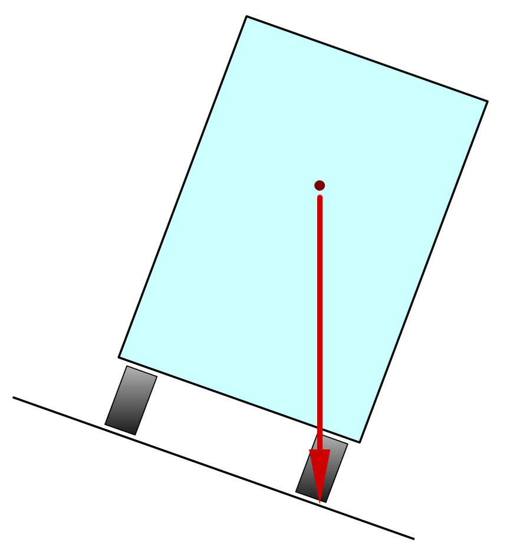
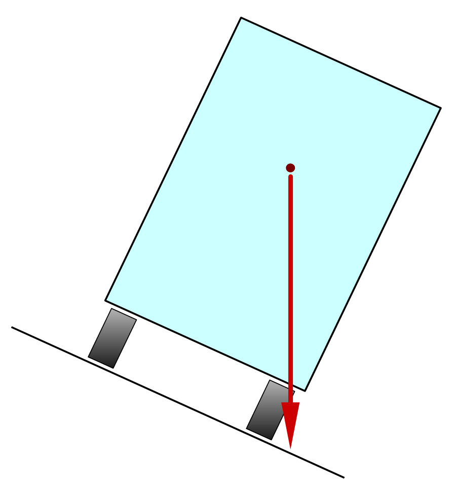
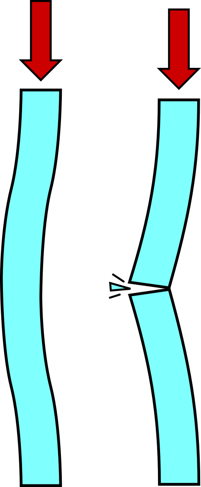

Estabilidad¶
Las estructuras que estamos estudiando, además de ser rígidas para soportar cargas sin romperse ni deformarse, deben ser estables para no volcar, deslizarse u oscilar ante las fuerzas externas.
Existen varios problemas que pueden presentar las estructuras debido a su falta de estabilidad. A continuación se detallan las más comunes.
Vuelco¶
El vuelco de una estructura se produce cuando el centro de gravedad no se encuentra sobre la base de apoyo de la estructura.
- Centro de gravedad:
Es el punto medio de toda la masa de la estructura. Es el punto donde intuitivamente tenemos que apoyar la estructura para que esta no vuelque a un lado o a otro.
En el caso de un martillo, su centro de gravedad se encuentra en el mango, muy cerca de la cabeza, que es la parte que más pesa.
  En el caso del camión de la figura, el centro de gravedad está en el punto rojo, relativamente alto.
En la primera imagen el centro de gravedad cae dentro de la zona de apoyo por lo que el camión es estable y no vuelca.
En la segunda imagen el camión está inclinado y el centro de gravedad está a punto de salir de la zona de apoyo. El camión está a punto de volcar.
En la tercera imagen el camión se ha inclinado más y el centro de gravedad no está sobre la zona de apoyo. En este caso el camión no es estable y volcará.
{kind=link}
{kind=link}
{kind=link}
Para que se produzca el vuelco de una estructura, el centro de gravedad debe caer fuera de la zona de apoyo de la estructura con el suelo.
Soluciones al vuelco¶
Existen varias soluciones para evitar que una estructura vuelque.
- Añadir un contrapeso
Cuando una estructura está demasiado escorada hacia un lado o un peso lateral puede hacerla volcar, un contrapeso en el lado contrario puede solucionar el problema.
Ejemplo: Contrapeso en las grúas de obra o en los camiones-grúa.
- Ampliar la base de apoyo
Cuanto mayor sea la base de apoyo, más difícil es que el centro de gravedad caiga fuera de la base.
Ejemplos: Camión grúa con apoyos extensibles. Coche deportivo muy ancho. Las personas separan instintivamente los pies entre sí para tener mayor base de apoyo cuando el suelo se mueve.
- Bajar el centro de gravedad
Si el centro de gravedad está más bajo, es más difícil que caiga fuera de la base de apoyo.
Ejemplos: Para conseguir bajar el centro de gravedad de un camión, hay que colocar los bultos más pesados en la parte baja y los ligeros en la parte alta. Los automóviles deportivos suelen ser bajos para tener el centro de gravedad bajo y conseguir así mayor estabilidad.
- Anclar la estructura al suelo
Con esta solución se refuerza la estructura ampliándola al suelo.
Ejemplos: Vientos de una tienda de campaña. Cables de anclaje de una antena. Farola o mástil de bandera anclados al suelo.
{kind=link}
{kind=link}
{kind=link}
{kind=link}
Pandeo¶
{kind=link}
El pandeo es una inestabilidad que se produce en barras y columnas esbeltas sometidas a compresión.
Cuando la forma de la barra o columna es muy estrecha y muy larga (esbelta), corre el riesgo de doblarse y perder así su resistencia. El resultado final es que la estructura se flexiona hasta partirse y fallar.
Soluciones al pandeo¶
- Hacer el perfil más grueso
Si aumentamos el perfil de la barra o de la columna haciendo que sean más gruesos, dejarán de ser esbeltos y el pandeo no se producirá.
Por ejemplo, se puede utilizar un tubo grueso con paredes finas en vez de una barra maciza. Los dos tienen el mismo peso y la misma cantidad de material, pero el tubo hueco no pandea mientras que la barra maciza, que es más esbelta, si pandea.
Esto se utiliza, por ejemplo, en las estructuras de las bicicletas que están formadas por barras tubulares o en las estructuras de las torres eléctricas formadas por barras en forma de L en vez de barras macizas.
- Sujetar el centro de la barra
Si sujetamos el centro de la barra para evitar que se mueva, el pandeo no llegará a producirse.
Por ejemplo, una torre de alta tensión está construida con cuatro barras verticales esbeltas que soportan la mayor parte del peso y barras horizontales y oblicuas entre ellas que evitan que las barras verticales puedan pandear.
Oscilaciones¶
Las oscilaciones o vibraciones de una estructura pueden ser beneficiosas o perjudiciales.
En ciertos casos conviene que la estructura no sea completamente rígida. Si la estructura puede flexionarse y oscilar ante una carga externa, esto permite que no llegue a fallar. Ejemplos de este comportamiento lo tenemos en los rascacielos que oscilan en su azotea en caso de terremoto o en caso de soportar vientos fuertes. Los mástiles de barco o las alas de un avión también son capaces de oscilar para adaptarse a los esfuerzos que soportan. Si estas estructuras fuesen completamente rígidas podrían destruirse con los grandes esfuerzos que soportan.
En otros casos las oscilaciones pueden llegar a sumarse poco a poco igual que ocurre en un columpio, haciendo que la estructura oscile cada vez con mayor amplitud hasta llegar a desmoronarse. Esto es lo que le pasó al famoso puente de Tacoma Narrows apodado Gallopin Gertie por las grandes oscilaciones que sufría cuando soplaba la brisa del verano en que se inauguró. Al llegar el otoño, un viento de apenas 64 kilómetros por hora derrumbó el puente, afortunadamente sin producir muertes. Puedes ver una grabación del suceso en YouTube:
Sin llegar a ser tan dramáticas, las oscilaciones pueden producir en otros casos ruidos y vibraciones muy molestas. Esto se produce especialmente en las frecuencias de resonancia que son las frecuencias en las que vibra una estructura de forma natural. Sumando poco a poco los efectos de una pequeña vibración a la misma frecuencia de resonancia, la oscilación, igual que en un columpio, puede llegar a hacerse muy grande y molesta.
Soluciones a las oscilaciones¶
- Evitar las cargas oscilantes
- Esta es la solución que toman los soldados que caminan en formación por encima de un puente que no es muy rígido. En este caso los soldados dejan de caminar a la vez y comienzan a caminar de manera desorganizada para que el puente no resuene al mismo ritmo de los pasos [1] .
- Amortiguar la estructura
- Esta es la solución que se toma en las ruedas de los vehículos o en algunos edificios resistentes a terremotos. Un amortiguador es un elemento que frena las oscilaciones y reduce la resonancia.
Ejercicios¶
- ¿Qué problemas de estabilidad pueden tener las estructuras?
- Dibuja una estructura poco estable y otra que sea muy estable.
- ¿Cuándo vuelca una estructura?
- ¿Qué soluciones hay para evitar que una estructura vuelque? Escribe un ejemplo de cada una.
- ¿Qué es el pandeo?
- ¿Cómo se puede evitar el pandeo?
- ¿Cómo se pueden evitar las oscilaciones perjudiciales en una estructura?
Notas
| [1] | El puente de Broughton fue un puente de suspensión en Manchester, Inglaterra, que en 1831 colapsó a raíz del paso de una tropa de soldados caminando en formación. |